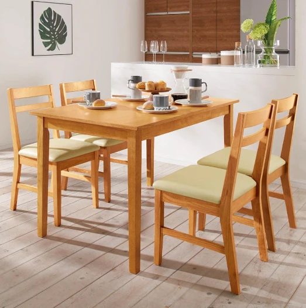
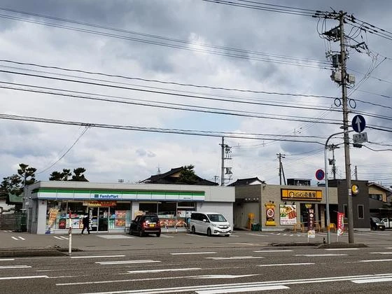
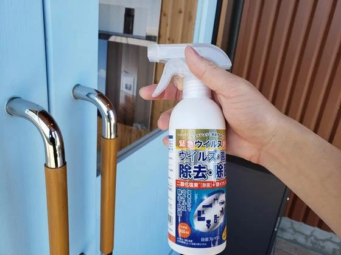

家を建てる時にかかる必要経費②
こんにちは。富山で自然素材にこだわるホンモノの家、フジ創アイノスです。 前回に引き続き、家を建てる時にかかる必要経費についてお話しします。 ▼火災保険・地震保険 火災保険は、保険会社によって条件も費用も違います。 そして
続きを読む →FUJISOU AINOS JOURNAL
家づくりのこと、暮らしのこと。
日々の想いを、お伝えします。
新しい記事から 34・40ページ
こんにちは。富山で自然素材にこだわるホンモノの家、フジ創アイノスです。 前回に引き続き、家を建てる時にかかる必要経費についてお話しします。 ▼火災保険・地震保険 火災保険は、保険会社によって条件も費用も違います。 そして
続きを読む →こんにちは。富山で自然素材にこだわるホンモノの家、フジ創アイノスです。 今回は、家を建てる際に、土地や建物以外にかかる必要経費についてお話しします。 住宅ローンの商品選びが出来、毎月の返済金額と返済年数が決まれば、 銀行
続きを読む →
こんにちは。富山で自然素材にこだわるホンモノの家、フジ創アイノスです。 前回、リビングダイニングは子供の物で散らかりやすい ということをお話ししました。 今回はリビングダイニングをキレイに保つための間取りについてお話しし
続きを読む →こんにちは、富山で自然素材にこだわるホンモノの家。フジ創アイノスです。 前回まで、家をキレイに保つための収納についてお話ししました。 今回は、片付けやすい家にするためにもう1つ大事な要素、 リビングダイニングキッチンの間
続きを読む →こんにちは、富山で自然素材にこだわるホンモノの家。フジ創アイノスです。 前回に続いて、片付けやすくいつもスッキリした家にするためにはどのようにすればいいか、 考えていきます。 ▼管理しやすい収納とは？ 人の脳は、物事が複
続きを読む →こんにちは、富山で自然素材にこだわるホンモノの家。フジ創アイノスです。 核家族や共働きの家庭が多く、忙しい現代人。 掃除の手間はできるだけカットしたいですよね。 そのために、出来るだけ片付けがしやすい家づくりについて考え
続きを読む →
こんにちは、富山県で自然素材にこだわるホンモノの家。フジ創アイノスです。 今回は洗濯動線についてのお話の続きです。 ▼キッチンや洗面の勝手口から外に出て干す場合 2階のベランダまで干しに行くのが面倒だからと、 キッチンや
続きを読む →
▼ショールームで家づくり相談 フジ創アイノスでは予約制で無料相談会を実施しています。 可愛いショールームで家づくりのお悩み相談にお応えします。 資金計画のシュミレーションをはじめ、将来を見据えた家づくりを提案致します。
続きを読む →こんにちは、富山県で自然素材にこだわるホンモノの家。フジ創アイノスです。 前回に続き、洗濯の一連の流れを詳しくみていきながら、 どうすれば良い動線が出来上がるかを考えてみましょう。 ▼2 階のベランダに干す場合 洗濯機の
続きを読む →こんにちは、富山県で自然素材にこだわるホンモノの家。フジ創アイノスです。 共働きの家庭が多いいま、 いかに家事にかかる手間や時間を短縮出来るか？は、 家づくりで大切なことの1つではないでしょうか。 たとえば 洗濯 は毎日
続きを読む →こんにちは、富山で自然素材にこだわるホンモノの家。フジ創アイノスです。 ▼ウィルスの波紋 皆さんは最近結婚予定のあるご友人から 「延期になった」「できなくなった」などの連絡はもらっていませんか？ ウィルスの影響でライブや
続きを読む →こんにちは、富山で自然素材にこだわるホンモノの家。フジ創アイノスです。 今回は、金利上昇リスクを現実的に考えてみる、３回目です。 前回、固定期間選択型商品は、 金利上昇時の返済額アップに天井がない という特徴があるとお話
続きを読む →こんにちは、富山で自然素材にこだわるホンモノの家。フジ創アイノスです。 今回は、金利上昇リスクを現実的に考えてみる、２回目です。 もしも、住宅ローンに対する知識がほとんどない状態で、一見客として銀行の窓口に行ったら、 確
続きを読む →
▼ショールームで家づくり相談 フジ創アイノスでは予約制で無料相談会を実施しています。 可愛いショールームで家づくりのお悩み相談にお応えします。 資金計画のシュミレーションをはじめ、 将来を見据えた家づくり を提案致します
続きを読む →変動金利型の住宅ローンは市場の金利に応じて適用金利が変わる仕組みになっており 金利が上がった場合は、これに連動して返済額が増えることになります。 ただ、そうそう返済額が変わってしまうとなると、返済計画が非常に立てにくくな
続きを読む →
こんにちは、富山で自然素材にこだわるホンモノの家。フジ創アイノスです。 弊社不動産ホームページではフジ創のおうちを建てるのに最適な 「オススメの土地」を紹介しています。 連休中でも土地についての詳しい質問にお答えします
続きを読む →
こんにちは、富山県で自然素材にこだわるホンモノの家。フジ創アイノスです。 静かなゴールデンウィークが明け、まだまだ油断ができない日々が続いております。 弊社では 皆様が安心しておうちの相談ができる環境 をつくるために ス
続きを読む →
【家づくりの考えが変わる】本プレゼントキャンペーンのお知らせ いい家づくりの為には勉強が必要です。 作ってから後悔するというのだけは避けたい。 展示場を回って営業さんに聞く？それもいいかもしれません。 ですが 展示場を回
続きを読む →
こんにちは、富山県で自然素材にこだわるホンモノの家。フジ創アイノスです。 今回も全期間固定型の住宅ローンの注意点についての話をさせていただきます。 ▼注意点その3：借り過ぎてしまう・・・ 最も怖い失敗は借り過ぎてしまうこ
続きを読む →こんにちは、富山県で自然素材にこだわるホンモノの家。フジ創アイノスです。 今回も全期間固定型の住宅ローンの注意点についての話をさせていただきます。 注意点その2：どこの銀行でも金利が同じくらいではない・・・ これは、全期
続きを読む →こんにちは、富山県で自然素材にこだわるホンモノの家。フジ創アイノスです。 前回お話した通り全期間固定型の住宅ローンの注意点についての話をさせていただきます。 ▼注意点その1：初期費用が余分にかかる・・・ まず1つ目の注意
続きを読む →
こんにちは、富山で自然素材にこだわるホンモノの家。フジ創アイノスです。 【フジ創の建てたおうち】で紹介している施主様邸の施工事例を紹介します。 ▼木の空間演出~太陽を迎えるおうち こちらのおうちの一番のポイントは 「光」
続きを読む →
こんにちは、富山で自然素材にこだわるホンモノの家。フジ創アイノスです。 高岡市内免にあるモデルハウス『アンティークでかわいいおうち』 高岡市内免モデルハウスの紹介をさせていただきます。 内免ゼロエネ住宅（３１坪） 太陽光
続きを読む →こんにちは、富山で自然素材にこだわるホンモノの家。フジ創アイノスです。 弊社不動産ホームページではフジ創のおうちを建てるのに最適な 「オススメの土地」を紹介しています。 連休中でも土地についての詳しい質問にお答えします
続きを読む →